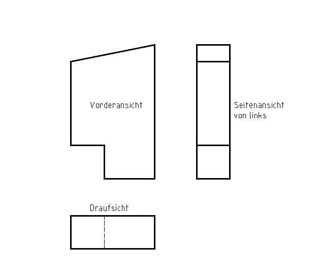
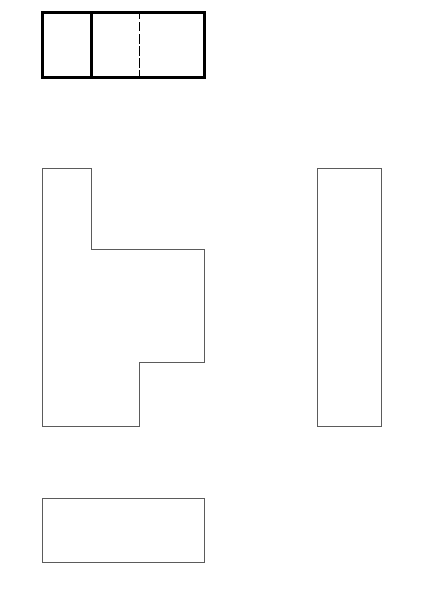
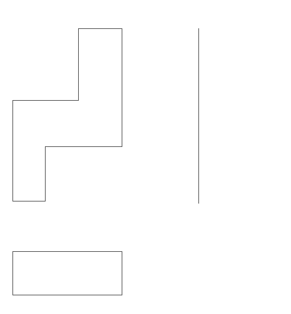
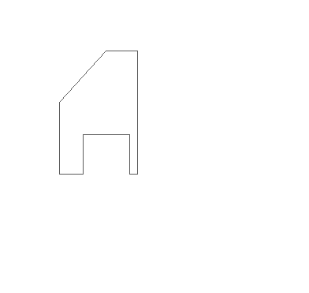

1 Normalprojektion
Öffnet YouTube. Braucht Internet.
Zweck: Die Normalprojektion zeigt einen Körper vollständig in Ansichten.
Eine Ansicht ist das Bild, das du von einer Seite siehst.
Die drei Ansichten
- Vorderansicht: von vorne gesehen
- Seitenansicht: von links gesehen. Sie steht rechts neben der Vorderansicht.
- Draufsicht: von oben gesehen
Linienarten
Eine Kante ist eine Linie am Körper, wo zwei Flächen zusammenstoßen. Unsichtbar ist sie, wenn sie hinten liegt und du sie nicht sehen kannst.
| Durchgezogene Linien z. B. Außenlinien | |
| Gestrichelte Linien z. B. unsichtbare Kanten | |
| Strichpunktierte Linien z. B. Symmetrielinien |
Symmetrielinie = Mittellinie. Links und rechts davon ist alles gleich.
Linienstärke
| Breite Linien z. B. Außenlinien | |
| Schmale Linien unsichtbare Kanten, Symmetrielinien |
Beispiel

Zeichenaufgabe 1
✎ Am Papier
Du brauchst: Papier, weichen Bleistift, Lineal.

Die dicke Figur ganz oben ist die Ansicht von unten. Sie ist schon fertig. Du bearbeitest die anderen drei Ansichten.
1. Zeichne die Ansichten ab.
2. Schreib dazu: Vorderansicht, Seitenansicht, Draufsicht.
3. Die Linienstärke stimmt nicht. Zieh die Außenlinien mit einem weichen Bleistift nach.
4. Es fehlen unsichtbare Kanten. Zeichne sie in die Seitenansicht und in die Draufsicht ein.
Zeichenaufgabe 2
✎ Am Papier

Mach es genauso wie bei Zeichenaufgabe 1.
Die Seitenansicht ist nur angefangen (nur ein Strich). Zeichne sie fertig.
- Ansichten beschriften
- Außenlinien breit nachziehen
- Unsichtbare Kanten in Seitenansicht und Draufsicht einzeichnen
Zeichenaufgabe 3
✎ Am Papier

Der Körper ist 3 cm tief. Alle Kanten gehen gerade nach hinten.
1. Zeichne die fehlenden Ansichten ein.
2. Schreib dazu: Vorderansicht, Seitenansicht, Draufsicht.
3. Zeichne unsichtbare Kanten gestrichelt und dünn.